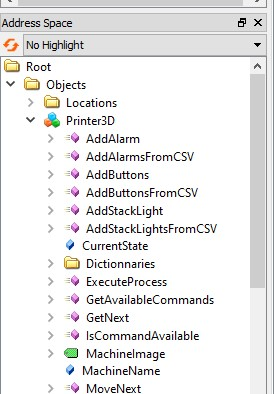
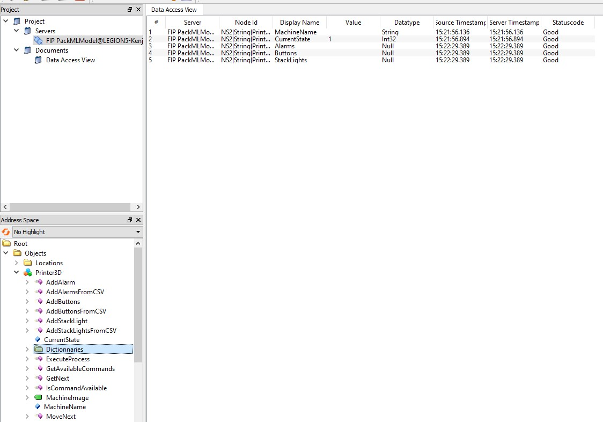

Go back
View a variable
- In UaExpert with the client connected to the server, locate the Address Space on the bottom left corner of the screen.
- Click on the arrow on the left of the machine that interests you (example below with the instance "Printer3D").

- There are 5 variables that may interest you in an instance of a machine: The name of the machine (MachineName), the state of the machine (CurrentState), and the alarms, stack lights, buttons (all located in the Dictionnaries folder.
- To see the content of one variable, simply drag-and-drop it to the Data Access View (which is the blank page in the center of the screen).
- You can also drag-and-drop the Dictionnaries folder to see the Alarms, Buttons, and StackLights variables. Just click "Yes" on the pop-up window.
- Below is a screen showing the 5 variables of the Printer3D instance

- Note that you can change the variables directly into the Data Access View, but this is not recommanded. Use the methods instead.
- Most likely all variables are empty (except the CurrentState variable), this is normal.